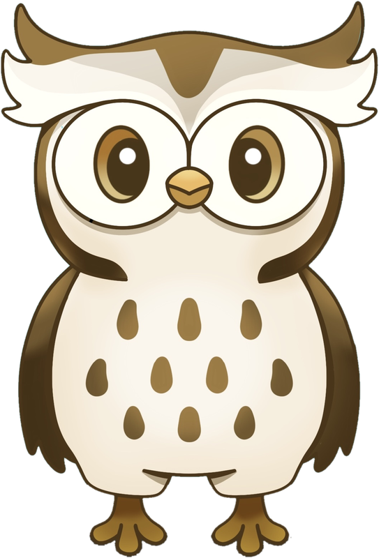

01
Guided PathFinder
Answer a short series of questions about the will, any existing court applications, the Inheritance Certificate and the assets. We map a tailored route with your recommended next steps.
Start the PathFinderFree, step-by-step help with the Inheritance Certificate, Faraid, Letters of Administration, Probate and Form 162 — built by SUSS Law students for families who need a clear path.

Each tool takes only a few minutes. You can move between them at any time.
Answer a short series of questions about the will, any existing court applications, the Inheritance Certificate and the assets. We map a tailored route with your recommended next steps.
Start the PathFinderApplying for a Grant of Probate or Letters of Administration? We ask the intake questions and fill in the official Form 162 for you to download as a Word document.
Fill in Form 162The usual sequence for administering a Muslim estate in Singapore, from the death certificate to the final distribution, with the Probate and Letters of Administration routes side by side.
Open the roadmapEight steps, in the order families usually take them. Applications can be filed before debts are settled; only the distribution has to wait.
Majoo answers from MajuLaw’s reviewed material on Singapore Muslim estate administration, and says so when it does not know.
Preview only. Everything above is static artwork; the working PathFinder, Form 162, roadmap and chatbot are wired in once the look is approved.